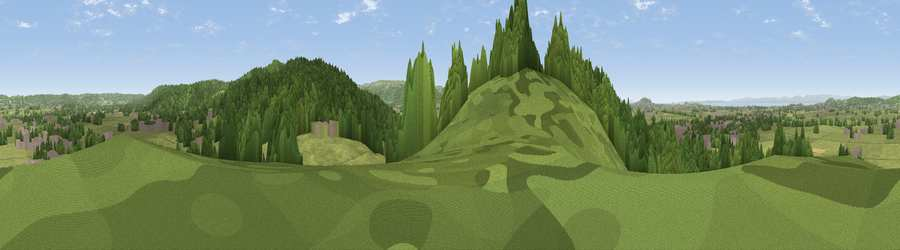

Viewpoint near Claverham
#17885 in England · top 39% of its area beats it · near ClaverhamWhere it is
The exact computed spot (ST 44301 65204). Click the marker for map links.
The view, rendered

A 360° render of this exact spot computed from the terrain model, tree cover and land cover — summer colours, afternoon light, calibrated against photographs of famous viewpoints. Real trees, hedges and buildings will differ in detail.
The panorama
Grey silhouette: terrain skyline in each direction (720 bearings, Earth curvature and refraction included). Dashed green: skyline with trees (+15 m) and buildings (+8 m) as obstacles. Blue strip: how far the ground is visible on each bearing.
Where the view opens
Wedge length = distance to the farthest visible ground on that bearing (vegetation-aware). Rings at 10, 25 and 50 km.
What fills the view
52% grassland · 37% woodland · 9% built-up · 1% cropland
Angular shares of the visible panorama (visual magnitude), not map area. Landscape diversity 0.44 (0–1 Shannon).
Key numbers
More beautiful places nearby
The staircase of upgrades: each row has a higher view potential than everything closer. Driving times are estimates from straight-line distance, calibrated against real road routing — check an actual route before setting out.
| Place | Direction | Drive | Score |
|---|---|---|---|
| Cadbury Hill | SSW · 0 km | ~1 min | 57.9 |
| Viewpoint near Congresbury | SE · 1 km | ~4 min | 69.4 |
| Viewpoint near Tickenham | N · 7 km | ~15 min | 72.1 |
| Dial Hill | NNW · 8 km | ~16 min | 74.9 |
| Beacon Batch | SSE · 9 km | ~18 min | 79.4 |
| Bleadon Hill [Loxton Hill] | SW · 11 km | ~21 min | 79.6 |
| Viewpoint near Holford | SW · 38 km | ~57 min | 80.8 |
| Viewpoint near Holford | SW · 38 km | ~57 min | 82.2 |
51.38313, -2.80176 · source: osm viewpoint · position refined by local search. Computed location — check access rights before visiting.